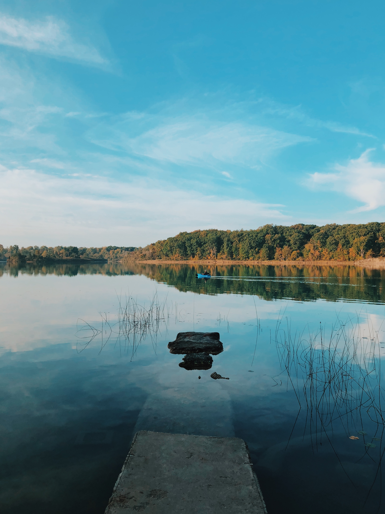

In the Beginning
I was born in San Juan, Puerto Rico. My biological sperm donor was stationed there for the Navy. We lived there until I was 3 years old. Then we moved to Michigan where both my parents grew up. My parents divorced shortly after and my mom moved my older brother and me to Battle Creek and that's where we stayed. I graduated from Lakeview High School in 1989.
Military Life

I enlisted into the military in January of 1989 through the Delayed Entry Program. I was only 17 at the time so I had to get my parents permission and they had to sign paperwork saying they agreed to it. I entered basic training for the Army in September of 1989 at Fort Dix, New Jersey. From there I went to my AIT in Fort Rucker, Alabama where I trained to be a helicopter mechanic. I graduated top of my class and recieved the Army Achievement Medal for my hard work. I went to Fort Benning, Georgia after that where I graduated from the U.S. Army Airborne School. From there I was stationed at Fort Bragg, North Carolina with the 82nd Aviation Brigade, 82nd Airborne Division. I deployed to Saudi Arabia on Thanksgiving Day, 1990, for Operation Desert Shield and then moved up into Iraq during Operation Desert Storm. Due to many issues caused by exposure to chemical warfare, bad vaccines, and an experimental anti-nerve agent pill they forced us to take that caused my central and peripheral nervous systems go haywire and become dysfunctional. I am also a Military Sexual Trauma survivor from being sexually assaulted by a guy in my unit four days after returning from the war. The culmanation of these things forced my military career to be cut short and I was discharged in 1991.
Future Goals

My future goals are to find a full time job in the tech field with the hopes of making it a successful career. I do graphic artwork also, so I hope to merge the coding and my art together and possibly work on developing applications. I plan on continuing to learn as many different types of coding as I can to stay up to date with changing technology.